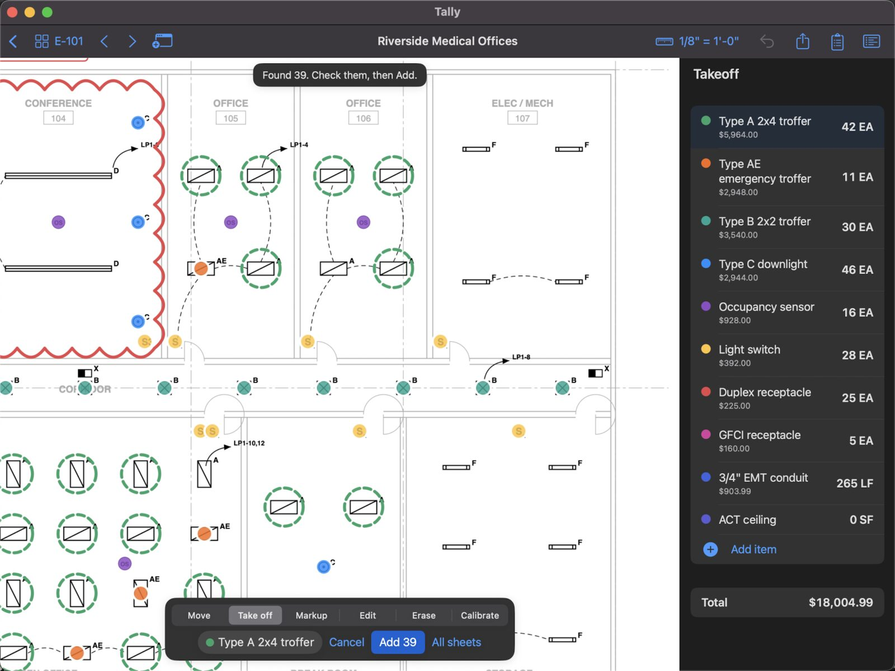
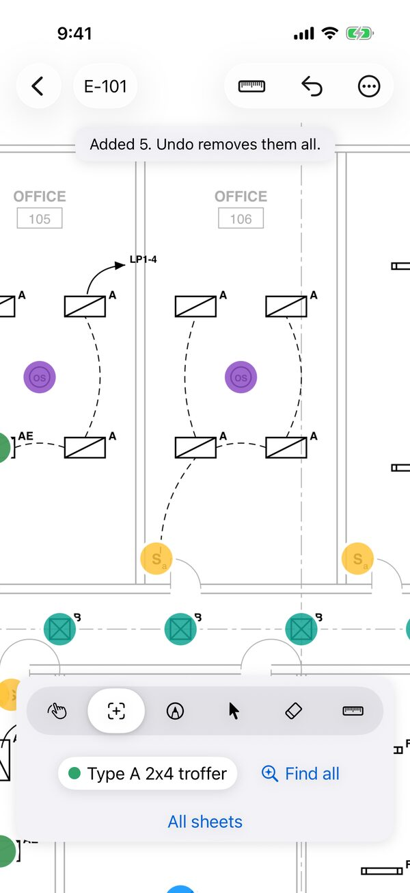

Construction takeoff for iPad, iPhone and Mac. Here's how to get started, answers to the questions people ask most, and a real person to email when you're stuck.


The user guide walks through each one with pictures. No plans at hand? Tap Try the sample plan in an empty library.
Tap one fixture and count every match on the sheet, then the whole set.
How it worksPrinted scales read for you, calibration, and feet or metres.
Set it rightCosts, waste, materials, overhead, profit, tax and supplier price lists.
Build a bidExcel with live totals, CSV, PDF reports, and markups for Bluebeam.
See every exportSearch, or browse by topic. Can't find it? Email us.
iPhone and iPad with iOS or iPadOS 17 or later, and Mac with macOS 14 Sonoma or later. It's one app: buy Tally Pro once and it works on all three with the same Apple Account.
Plan set PDFs of any size (sets of hundreds of sheets open in a moment), photos or scans of a sheet (JPEG, PNG or HEIC), and takeoff files sent from another Tally. Tap + in the library, open a PDF in Tally from Files or Mail, or drag it onto the library on an iPad or Mac.
No account, ever. Tally works offline: your plans and takeoffs are on your device. With iCloud on, they also sync to your other devices whenever you're connected.
Importing plans, scales, counting by hand, runs and areas, zones, markups, photos, pricing and the bid are free, with no time limit. Tally Pro adds Find all, rooms in one tap, exports and printing, with a 7-day free trial.
Yes. In an empty library, tap Try the sample plan: a real electrical sheet with an electrical item list, ready to count and measure.
Any trade that counts, measures or prices from plans. New takeoffs can start with an item list for electrical, drywall and framing, flooring, roofing, plumbing, HVAC, concrete or painting, or blank, or with the items and prices of one of your earlier takeoffs.
A printed scale is only right if the set was printed at its full size. Half-size sets, and PDFs that were resized, need calibrating: choose Calibrate, tap both ends of a long dimension you know, and type its length. If the sheet already has a scale, Tally first shows the line's length at that scale, so you can see whether it's off.
The one you pick. The Scale menu lists every scale printed on the sheet, under Printed on this sheet. Each sheet has one scale at a time, used for every run and area on it, so pick the scale of the view you're taking off.
Yes, two ways in the Scale menu: Use each sheet's printed scale sets every sheet without a scale from the one scale it prints (sheets with several, or none, are left for you), and Use this scale on all sheets copies this sheet's scale to the rest.
Yes. Scale menu › Units › Metres shows the takeoff in m, m² and m³, prices per metre included. Metric scales (1:50, 1:100 and the rest) are listed and read from the sheets, and in metres a length typed without a unit is metres. Switching units never changes a total.
Runs and areas on a sheet with no scale can't be measured yet, so they'd count as zero. Set the sheet's scale and their lengths and areas appear. Counts don't need a scale.
Yes, from the item's settings: a wall height turns a run into wall area, a roof pitch turns plan area into true roof area, and a depth turns an area into cubic yards for a slab or excavation. See Items.
At full-sheet zoom a fingertip covers several symbols, so Tally can't tell which one you mean. Zoom in until the symbol is easy to tap, then tap it.
Every match is shown for you to check before it's added: tap a wrong one to leave it out, and tap a missed one to count it. Find all works best on PDFs exported from CAD; scanned paper drawings work less reliably. If a set keeps tripping it up, send us the sheet and we'll look.
No. Symbols already counted for the item are skipped, on the sheet and when All sheets searches the rest of the set.
Yes. Types drawn alike but tagged differently are kept apart, in any orientation. It also finds long fixtures such as pendant rows, symbols drawn as just a word (a switch shown as "S3"), and fixtures inside a ceiling grid.
Symbols counted with Find all are covered at their own size (a long fixture, such as a pendant row, over its middle); ones you tapped by hand get a fixture-sized cover. Turn it off from the item menu at any time.
Count it, then either Scale menu › Repeat this sheet (typical floor) to multiply its quantities, or Copy this sheet's marks to another sheet of the same size, so each floor has its own marks (and its own zone, if you use zones).
Tally reads each number from the sheet's title block, with text recognition on scans. Sets drawn without discipline sheet numbers, and some scans, can't always be read. The sheets are still in the order of the PDF, and the thumbnails and arrows work as usual. Send us the set and we'll improve how it's read.
Scans have no text layer (or only a stamped page number), so Tally reads each scanned sheet once, a few seconds a sheet, and keeps the result with the takeoff. Results show as each sheet is read, and later searches are instant.
Yes. With the Move tool, tap a sheet number written on the plan, such as SEE E-501 or a detail's 3/E-501, and that sheet opens.
Scale menu › Rotate sheet (⌘R on a Mac) turns it a quarter turn at a time. The plan file isn't changed, and your marks stay put on the drawing.
No. In the library, press and hold the takeoff and choose Replace with revised set. Marks follow their sheets by sheet number, and Compare shows what changed on each sheet: removed in red, added in blue. The previous version is kept.
Once an Apple Pencil has drawn, only the Pencil draws, so fingers can move the sheet (as in Notes). With iPadOS's Only Draw with Apple Pencil off and no Pencil used, a finger draws.
Export Plan PDF with markups. Every mark, markup and stamp is a standard PDF annotation, so Bluebeam, Acrobat and Preview list and edit them.
Inside the takeoff, so they go wherever it goes (to your other devices with iCloud). With Move, tap a photo's pin to see, share or caption it. They also appear at the end of the PDF report and the plan PDF. To add a photo that's in Files (or the Finder on a Mac), choose Choose file when you place it.
Yes: Markup › Stamp › New stamp. Your stamps stay in the list for every takeoff, alongside APPROVED, REVISE AND RESUBMIT, FIELD VERIFY and the rest.
Yes. The Markups button lists every markup by sheet; tap the circle to mark one resolved. Export › Markups as a punch list gives a CSV with each one's sheet, type, text, status and date.
Yes. Save the price list as CSV and choose Update prices from a spreadsheet under the total. Tally matches names to your items and materials, sets their prices in one step (one Undo), and tells you which names it couldn't find. You can also export your takeoff as CSV, change the prices in Excel, and read it back in. More
Yes. The Excel workbook has live totals: change a price, a waste % or a markup percentage in Excel and the bid updates. It has sheets for materials, zones, sheets and markups too.
Under the total in the items panel, tap Add overhead, profit and tax. Contingency, overhead, profit and tax are percentages of the cost, and fixed amounts add costs you don't measure, such as a permit or a lift rental. Exports show the bid under the total.
From the export button: Print this sheet (the sheet on screen with its marks and quantities) or Print the report. On a Mac, ⌘P. Printing is part of Tally Pro.
Exports follow Tally's language. To keep the device in Spanish and Tally in English, go to Settings › Apps › Tally › Language.
On your device and, when it's signed in to iCloud, in your own iCloud account, so every takeoff appears on your iPhone, iPad and Mac. To keep them on one device only, tap the iCloud button in the library and choose Keep on This Device Only. Tally has no accounts of its own and sends nothing to us. See the privacy policy.
Yes. Changes made on one show up on the other, and if both were changed while apart (one offline), the two are combined mark by mark, keeping the latest change of each.
Export › Takeoff file, then send it by Mail, Messages or AirDrop. When they open it in Tally it becomes a takeoff of their own, with the plans, marks, markups and photos. Opening one is free; creating one needs Tally Pro.
Not yet. Each person works on their own copy, and a takeoff file sent again lets them replace theirs or keep both. Your own devices share one copy through iCloud.
It's kept for 30 days on the device you deleted it on. Open Recently Deleted at the bottom of the library and tap Recover.
It was most likely saved by a newer version of Tally on another of your devices. Update Tally from the App Store and it opens. If it's up to date and still won't open, email us; nothing is deleted.
Find all (on a sheet and across the set), Room and All rooms, every export (Excel, CSV, PDF report, plan PDF with markups, punch list, takeoff file) and printing. It's monthly or yearly, with a 7-day free trial; the App Store shows the price in your currency before you subscribe.
In Tally: Help in the library › Manage subscription. Or in Settings › your name › Subscriptions on iPhone or iPad, or in the App Store app on a Mac. Cancel at least 24 hours before the period (or the free trial) ends.
One subscription covers iPhone, iPad and Mac with the same Apple Account. If it doesn't show, tap Help › Restore purchases (or Restore purchases on the Tally Pro screen).
Nothing is lost. Your takeoffs stay as they are, and everything free keeps working. Find all, rooms in one tap and exports come back when you subscribe again.
Write to with what happened and your device. A screenshot, or the sheet you were working on, helps a lot.